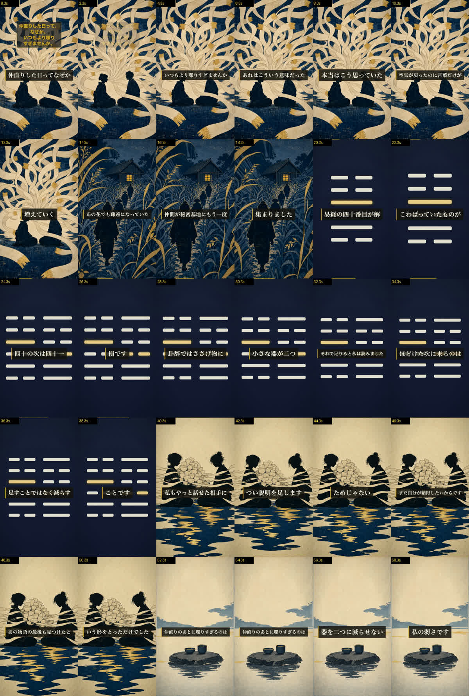

ep44「あの花×解」から派生させた書き下ろしショート（切り抜きではありません）。序卦の並びで 四十=解（ほどける）の次は四十一=損（減らす）。これが「へえ」の本体です。59秒。
releases/shorts/sh44-kai-tonari.mp4（48MB・9:16）。| # | 役割 | 本文 |
|---|---|---|
| S01 | 身に覚え 12.2s | 仲直りした日って、なぜか、いつもより喋りすぎませんか。あのときは悪かった、あれはこういう意味だった、本当はこう思っていた。空気が戻ったのに、言葉だけが増えていく。 |
| S02 | 作品に最小着地 | あの花でも、疎遠になっていた仲間が、秘密基地にもう一度集まりました。 |
| S03 | 卦の提示 | 易経の四十番目が、解。こわばっていたものが、ほどける。 |
| S04 | 隣の卦で裏返る 14.4s | 四十の次は、四十一。損です。減らす、の損。卦辞では、ささげ物に、小さな器が二つ。それで足りると、私は読みました。ほどけた次に来るのは、足すことではなく、減らすことです。 |
| S05 | 刃を自分へ | 私も、やっと話せた相手に、つい説明を足します。減らせないのは、相手のためじゃない。まだ自分が納得したいからです。あの物語の最後も、見つけた、という形をとっただけでした。 |
| S06 | 棘で閉じる ループ | 仲直りのあとに喋りすぎるのは、優しさじゃない。器を二つに減らせない、私の弱さです。 |

| 項目 | 結果 |
|---|---|
| 六爻図の正しさ | 解=010100（陽は二爻と四爻）／損=110001 を図から1本ずつ読んで db と一致 |
| 序卦の並び | kw_number 40 → 41 で隣接。「四十の次は四十一」は比喩でなく事実 |
| 卦辞 | db 実文 "two small bowls for the sacrifice" と逐語一致。「それで足りる」は語り手の判断として分離（卦に言わせていない） |
| 作品事実 | fact_check #10/#11/#12 の範囲のみ・出典URLを _facts.work に記録 |
| 機械QA | 尺59.0s（45-60s）／モーション／字幕同期／黒落ちなし／左右対称なし |
| 独立採点 | 90点・冒頭ゲート✅・自分への刃ゲート✅・意図逸脱なし |
いずれも次のショートで効く改善なので、台本・図・字幕位置の作り方として docs/ 側に反映する価値があります。今回は90点を通過した版で止めています。
このショートを投稿してよいですか？
A：承認 → 公開枠を claim → yt-publish.mjs --short で private＋予約（本編リンク・シリーズ行・登録CTAは自動付与）。本編 ep44 が 7/28 04:00 公開なので、ショートは 7/28 05:00 JST に置きます
B：直す → 上の宿題のどれか、または別の箇所を指定してください
主指標はいいね率（H51）です。再生数では判定しません（切り抜きショートのいいね率0.31% vs 本編3.98%＝13倍差が、書き下ろしへ切り替えた理由）。